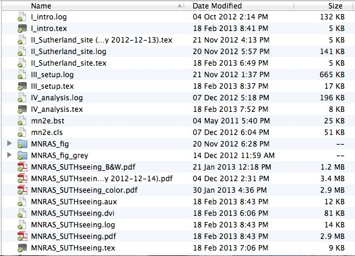
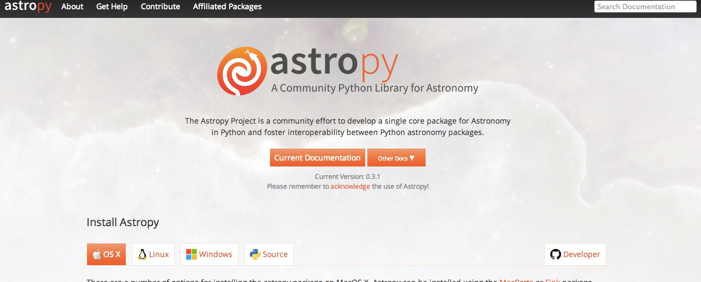

How I learned to stop worrying and love revision software
Steve Crawford
South African Astronomical Observatory
Revision Control is the management of changes to a product.
So why does it matter to you?
Revision control can make your life better
Revision control can backup your work
It can help avoid the nightmare of having your laptop break, your computer stolen, or accidentally deleting all of your data.Revision control can share your product
It can make it easy to share with collaborators around the globe or to work on the same project with someone right next door.Revision control can manage your project
A way to track milestones, issues, bugs, and progress, but also ways to undue mistakes, pursue different ideas, and incorporate conflicting developmentsVersion Control Examples
Backing Up
- Back Ups (Is IT backing up your harddrive?)
- Dropbox
- Google Drive
- iCloud
Pros: Simple, easy to share
Cons: Might not monitor all changes, might be hard to recover
Built-in Software
- Microsoft word (Track changes)
- Google Docs (Track Changes and Sharing)
- Wikis
Pros: Simple, easy to use
Cons: Software specifc, compatibility issues wih sharing
Client-Server Version Control

Examples: cvs, subversion
Pros: Powerful
Cons: Complicated
Distributed Version Control
Examples: git, mercurialPros: Powerful, easier to use
Cons: Still complicated
Online Code hosting sites
Forking is not a bad word
(And other revision control jargon)Life cycle of a Project
|
|
Trunk: Main development line Branch: Start a new line to develop on. Commit: Save a version of your work Merge: Join your branch back to the Trunk Checkout: Create a local working copy update: Merge changes from the trunk to a local working copy Conflict: Changes are made by different users that cannot be merged until they are resolved Tag: Snapshot in time. For example, a release Fork: To create a branch |

Examples of using Revision Software
Using Dropbox to share a paper
Simple, easy, and provides backup for the project
Using svn for research colloboration
We can share catalogs, code, paper text, and archive material
Using git+github for development
Sharing, commenting, reviewing of code, tracking progress, documentation, automatic builds, and writing papers
SAAO and Revision Software
Commonly used Revision Software
- Subversion
- git
- github (user rich interface)
- bitbucket (cheap private repos)
Projects using Revision Software
- PySALT
- Seeing Monitor
- SHOC
- SALT TCS
- SALT WM
- SALT PIPT
Revision Software can...
Save you timeImprove collaboration
Increase Productive
...and maybe even be a little fun
Willing to try the tutorial?
Want more resources?